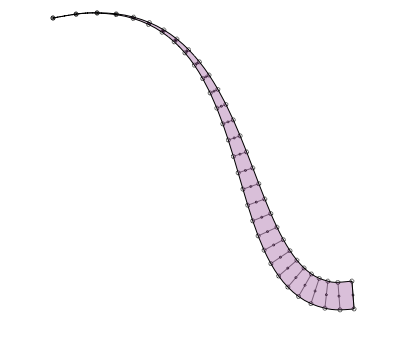
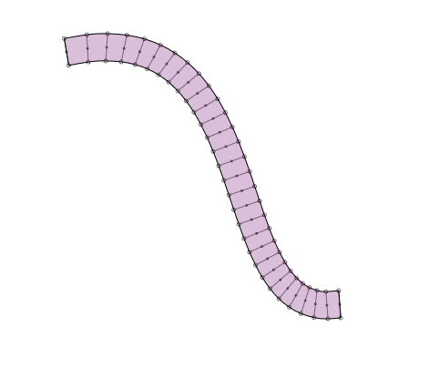

Here's an example with an outlined stroke that starts from a sharp spike. We can achieve this effect by gradually increasing the thickness of the path. For this we need to pass a transform function to outline_stroke that evaluates the thickness on a per-point basis.
I'm using a smoothstep() helper function. Users familiar with animation may know the smoothstep function as "tweening" or "easing in" - or "smooth transition" instead of "linear transition".

def smoothstep(a, b, x): """ Returns a smooth transition between 0.0 and 1.0 using Hermite interpolation (cubic spline), where x is a number between a and b. The return value will ease (slow down) as x nears a or b. For x smaller than a, returns 0.0. For x bigger than b, returns 1.0. """ if x < a: return 0.0 if x >=b: return 1.0 x = float(x-a) / (b-a) return x*x * (3-2*x) nofill() stroke(0) strokewidth(1) path = BezierPath() path.moveto(100, 100) path.curveto(334, 49, 257, 400, 400, 377) def my_transform(time, distance, angle): return distance * smoothstep(0.0, 1.0, time), angle strokewidth(28) path = outline_stroke(path, transform=my_transform, debug=True) strokewidth(1) fill(0.4,0,0.4,0.25) drawpath(path)
I've updated the function with a linecap parameter (so you can have rounded edges) and clarified the transform function:

from nodebox import geo def linecap_flat(pt1, pt2, path): path.lineto(pt2.x, pt2.y) def linecap_rounded(pt1, pt2, path): a = geo.angle(pt1.x, pt1.y, pt2.x, pt2.y) d = geo.distance(pt1.x, pt1.y, pt2.x, pt2.y) * 1 dx1, dy1 = geo.coordinates(pt1.x, pt1.y, d, a+90) dx2, dy2 = geo.coordinates(pt2.x, pt2.y, d, a+90) path.curveto(dx1, dy1, dx2, dy2, pt2.x, pt2.y) FLAT = linecap_flat ROUNDED = linecap_rounded def transform_uniform(time, distance, angle): return distance, angle def transform_expand(time, distance, angle): return distance * (0.2 + 0.8*time), angle def transform_contract(time, distance, angle): return distance * (0.2 + 0.8*(1-time)), angle UNIFORM = transform_uniform EXPAND = transform_expand CONTRACT = transform_contract def outline_stroke(path, linecap=ROUNDED, transform=UNIFORM, precision=30, debug=False): """ Returns an outlined path from the given path and the current strokewidth. This will plot vector points along the stroke edge. Interesting effects can be achieved by modifying the thickness of the path at each individual point. This can be done with the given transform function: - It takes three parameters: time, distance, angle. - It returns a new distance and angle. The time represents the current place on the path as a number between 0.0-1.0. The distance represents the thickness of the path. With the given linecap function you can define what the path ends look like: - It takes three parameters: the from-point, the to-point and the path. - It adds a LINETO or CURVETO to the path, connecting the two points. """ L = [] # The stroke edge to "the left" of the path. R = [] # The stroke edge to "the right" of the path. # The stroke width / 2 is the distance from the path to the left and right. # This distance can be tweaked by the given transform function. r = _ctx.strokewidth() * 0.5 # Take a number of sample points on the path. # The longer the path, the more precision is needed. points = list(path.points(precision)) for i, pt in enumerate(points): # We can calculate the angle (i.e. direction) of a point # from the line between this point and the next. # For the last point, take the line to the previous point # and reverse the angle. if i < precision-1: next = points[i+1] a = geo.angle(pt.x, pt.y, next.x, next.y) else: previous = points[i-1] a = geo.angle(pt.x, pt.y, previous.x, previous.y) - 180 d = r d, a = transform(float(i)/precision, d, a) # With some basic trigonometry, we can calculate the coordinates # of a new point at a distance from the point on the path. # The direction + 90 degrees is a point on the left stroke edge, # the direction - 90 degrees is a point on the right stroke edge. dx1, dy1 = geo.coordinates(pt.x, pt.y, d, a+90) dx2, dy2 = geo.coordinates(pt.x, pt.y, d, a-90) L.append((dx1, dy1)) R.append((dx2, dy2)) if debug == True: # In debug mode, show the sample points, # the calculated points on the stroke edge, # and the angles between them. _ctx.strokewidth(0.5) _ctx.oval(pt.x-1, pt.y-1, 2, 2) _ctx.oval(dx1-2, dy1-2, 4, 4) _ctx.oval(dx2-2, dy2-2, 4, 4) _ctx.line(dx1, dy1, pt.x, pt.y) _ctx.line(dx2, dy2, pt.x, pt.y) # Reset the strokewidth (we may have changed it in debug mode). _ctx.strokewidth(r*2) # From the points on the stroke edges, # calculate new Bezier paths. L = _ctx.findpath(L) R = _ctx.findpath(list(reversed(R))) # Join the paths in a single path and close the beginning and end. # The linecap function defines the style of the join. path = _ctx.BezierPath() for pt in L: path.append(pt) linecap(pt, R[0], path) # Close end. for pt in list(R)[1:]: # Ignore first MOVETO. path.append(pt) linecap(pt, L[0], path) # Close beginning. return path nofill() stroke(0) strokewidth(1) path = BezierPath() path.moveto(95, 164) path.curveto(318, 49, 188, 400, 400, 290) strokewidth(30) path = outline_stroke(path, linecap=ROUNDED, transform=CONTRACT, debug=True) strokewidth(1) fill(0.4, 0, 0.4, 0.25) drawpath(path)
WOW. I did the same a while ago, BUT the clarity of your code really pushes my own one to the trash-bin. thanks!
If you lock the angle (example: set a=90 in outline_stroke) you can create lovely pen strokes.

outline stroke function
Posted by Tom De Smedt on Oct 09, 2009
Some fun during lunch with path strokes.
The outline_stroke() function below takes a path and returns a new path with vector points plotted along the path's stroke edge (similar to outlining a stroke in Illustrator).
You can define your own transform function to manipulate the stroke thickness per-point. Examples included.